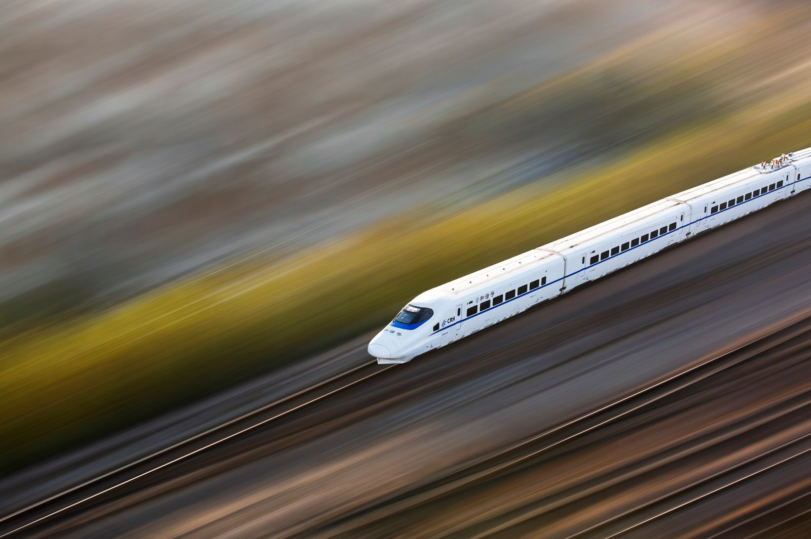

214
Wind-tunnel runs logged since 2011
Run 00 · Intake — Munich
I am Dr Kenji Mori, a rail aerodynamicist. Operators, manufacturers and infrastructure owners hire me to answer one question before they commit to a speed: what will it cost — in power, in tunnel concrete, in lineside noise — to hold it?
Drag grows with the square of speed; the power to beat it grows with the cube. Everything on this page — the audits, the tunnel studies, the fees — follows from that one line of physics. Run it yourself below.

F = ½ · ρ · v² · (Cd·A) · P = F · v = ½ · ρ · v³ · (Cd·A)
Pick a train from Table T1 below and step the speed. The tool reads each train's Cd·A from the printed table itself — change the table and the tool would change with it. What it will not do is flatter you: the power readout moves with the cube, because physics does.
Train — from Table T1
Speed — presets, or step by 10
Workings — printed line by line
The cube, checked against itself
| Class | Formation | Cd·A | Basis of the figure |
|---|---|---|---|
| Class 1 — Intercity EMU, as delivered | 8 cars · 200 m · 6 m nose | 7.6 m² | 1:20 wind tunnel, correlated to full-scale coast-down, ±3% |
| Class 2 — Intercity EMU, long-nose refit | 8 cars · 200 m · 15 m nose, faired bogies | 5.9 m² | Same fleet as Class 1 after the Study File 01 refit; coast-down verified |
| Class 3 — Maglev vehicle | 4 cars · 100 m · guideway wrap | 4.1 m² | Manufacturer tunnel data, independently reviewed by this practice, 2024 |
| Class 4 — Regional EMU | 4 cars · 100 m · flat front | 6.2 m² | Published type data, checked against two instrumented coast-downs |
Worked example — what a passenger-kilometre costs
Class 2 at 300 km/h: aerodynamic power 2.09 MW (Run 01) + rolling & auxiliaries 0.55 MW (stated) = 2.64 MW. ÷ 300 km/h = 8.80 kWh per train-kilometre. The train has 412 seats; at a 65% load factor it carries 268 passengers → 8,800 Wh ÷ 268 = 32.8 Wh per passenger-kilometre. Run the same sum at a 100% load factor and you get 21.4 — which is why every energy figure on this site names its load factor. An empty fast train is not an efficient train.
Coast-down + tunnel correlation; where the drag actually sits, ranked by cost per square metre removed.
Micro-pressure wave prediction and portal design. The pulse is the neighbours' problem, solved at the portal.
Stability cases, lineside pressure signatures, platform safety margins for mixed traffic.
What a timetable speed costs per seat-kilometre, at your load factor — before you promise it.
Which part of the train is loud, in which order to fix it: pantograph, bogies, nose, gaps.
What moves the price: facility time and model scope first, then the number of configurations tested. What never moves it: the conclusion. A study that says “stay at 300” bills the same days as one that says “320 is safe” — you are buying the measurement, not the answer you wanted.
A scoping figure, not a quote — the same status as the cube-law tool. Rates are read from the printed fee table beside it.
Study File 01 — the drag was in the gaps. An eight-car intercity fleet arrived with a brochure Cd·A its coast-downs would not confirm. The audit found the missing square metres where they usually hide: open inter-car gaps, unfaired bogies, a pantograph standing in the wind like a fence. Sealed, faired and shrouded, the fleet went from Cd·A 7.6 to 6.7 m² — worth 0.32 MW at 300 km/h, about 1.53 GWh a year across the fleet's diagrams. The nose, which everyone wanted to redesign, was responsible for almost none of it.
“Kenji's audit paid for itself in the first timetable year — and he was the only bidder who told us our flagship's published drag figure was wrong before he'd won the work. The gaps and bogies, not the nose. We have stopped redesigning noses.”
Bring the train, the tunnel and the load factor. The first conversation is a reading list and two hard questions, not a pitch.